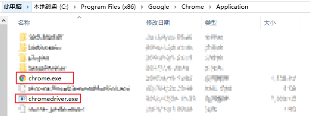
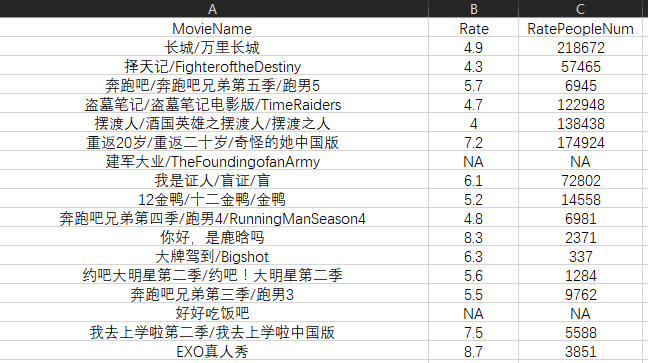

初探 RSelenium —— 基于豆瓣电影的爬虫实例
使用 RSelenium 包可通过 R 实现对浏览器的自动控制，完成诸如“点击”，“输入”等操作，从而爬取动态页面，解放你的双手！
本文基于 豆瓣电影 网站的爬虫实例， 对 RSelenium 包的使用做了初步的介绍。
工具准备
- JAVA：安装 JAVA
- Selenium Server：下载 selenium-server-standalone-版本号.jar （本文使用的是 3.4.0 版本）
- Chrome：安装 Chrome
ChromeDriver：下载 chromedrive.exe
注：下载的 chromedriver.exe 需放置在 Chrome 浏览器的安装目录下，即和 chrome.exe 放在同一个文件目录下。并将该目录添加入 环境变量 中。
一般 Chrome 的默认安装路径为：C:\Program Files (x86)\Google\Chrome\Application 。

- SelectorGadget ：[
非必需] Chrome 扩展，可用于定位网页元素的 xpath 。不过，也可以用 Chrome 浏览器在网页右键选项卡中的“检查” 功能（快捷键：F12）。 - 所需 R 包：
RSelenium包：实现对浏览器行为的自动控制rvest包：读取网页，定位网页元素并提取文本stringr包：利用正则表达式进行字符串处理
Let’s do it !
本文以“鹿晗”作为关键词（ 真爱粉们不要太较真 ），搜索其出演过的电影，最终整理出电影名、评分信息和评价人数表。
1.启动 Selenium Server
在所下载的 selenium-server-standalone-3.4.0.jar 文件目录下打开命令行，输入以下命令以启动Selenium Server ：
|
|
你也可以把这个命令存成后缀为 .cmd 的文件放在该文件目录下，这样下次只需双击运行即可。
2.在 R 中连接 Server ，打开浏览器和目标网页
|
|
是不是发现，运行代码后自动启动了 Chrome ，并打开了 豆瓣电影 ？！有没有一点紧张和小刺激？！😎
3.定位网页元素，并向其传入参数
RSelenium 包可通过 name 、 id 、 class 、 css-selectors 、 xpath 对网页元素进行定位。本文尽可能多地采取不同的方法来展示如何使用它们。
可以看到，我们需要定位到搜索框。使用 SelectorGadget 或者浏览器的“检查”功能，得到该搜索框的 name 为 search_text 。
在定位到搜索框后，需要传入 keyword 并”回车“，从而实现搜索。
findElement：定位符合条件的网页元素sendKeysToElement：传入参数123456# 设置搜索词keyword<- "鹿晗"# 定位网页元素SearchBox <- remDr$findElement(using='name', value='search_text')# 传入关键词和回车SearchBox$sendKeysToElement(list(keyword, key = 'enter'))
现在网页应该变成了”鹿晗“所出演的电影列表了。
4.读取网页，得到所需元素的文本
首先，我们定位到每一部电影。通过浏览器的“检查”功能，可以看出每部电影的 class=”pl2“ 。定位到每部电影之后，提取其中的信息即可。
getElementAttribute：得到网页信息接下来就是静态网页的爬虫套路了，使用
rvest包和stringr包里的函数即可。read_html：读取网页html_nodes：定位元素html_text：得到元素文本str_replace_all、str_extract：字符串处理123456789101112131415161718192021222324252627282930# 传入网页中所有的电影元素，将提取文本过程写成 MovieDataFunc 函数MovieDataFunc<-function(MovieList)lapply(MovieList,function(i){# 读取每部电影的元素doc<-i$getElementAttribute("outerHTML")[[1]]%>%read_html()# 得到电影名 namename<-doc%>%html_nodes("a")%>%html_text()%>%str_replace_all(pattern="\s",replacement="")# 得到评分 raterate<-doc%>%html_nodes("span.rating_nums")%>%html_text()# 得到评分人数 plpl<-doc%>%html_nodes("span.pl")%>%html_text()%>%str_extract(pattern="[:digit:]+")# 如果缺少评分或评分人数，则设置其为 NArate<-ifelse(identical(rate,character(0)),NA,rate)pl<-ifelse(identical(pl,character(0)),NA,pl)# 返回电影名、评分和评分人数return(c(name,rate,pl))})# 定位到第一页的所有电影元素MovieList <- remDr$findElements('class','pl2')# 得到第一页的电影信息MovieData<-MovieDataFunc(MovieList)
5.跳转到”下一页“，爬取所有页信息
将第一页的结果爬取完后，我们需要跳转到下一页，实现对所有搜索结果的爬取。
因此，需要判断还有多少页待爬取，遍历剩下的网页即可。
图中，”第二页”所对应的 xpath 为 //*[@id="content"]/div/div[1]/div[3]/a ；”后页“所对应的 class="next" ，我们使用 css-selectors 定位到它。
findElements：定位所有符合条件的网页元素clickElement：点击12345678910111213# 得到剩余网页信息RemainPage <- remDr$findElements('xpath','//*[@id="content"]/div/div[1]/div[3]/a')# 爬取剩余网页的电影信息for(i in 1:length(RemainPage)){# 定位到”后页“NextPage <- remDr$findElement('css', '[class="next"]')# 模拟“点击”行为NextPage$clickElement()# 定位到当前网页的所有电影元素MovieList <- remDr$findElements('class','pl2')# 爬取当前网页的所有电影信息MovieData<-c(MovieData,MovieDataFunc(MovieList))}
6.后续工作
当爬取了所有网页的信息之后，我们应当对结果进行整理，并储存。同时，关闭进程，退出浏览器。
quit：关闭进程，退出浏览器12345678# 将 MovieData 的格式改为数据框，并更改列名MovieData<-data.frame(t(sapply(MovieData,c)),stringsAsFactors = F)colnames(MovieData)<-c("MovieName","Rate","RatePeopleNum")# 创建 output 文件夹储存爬取结果，并将结果储存至相应的 .csv 文件中if(!file.exists("output"))dir.create("output")write.csv(MovieData,paste0("output/",keyword,"_moviedata.csv"),row.names = F)# 关闭进程，退出浏览器remDr$quit()
部分爬取结果如下图所示：

7.题外话
我们再做点有意思的工作~ 😜
在 cmd 中运行 Rscipt 命令可以运行 R 的脚本，并传入参数。我们只需要把 keyword<- "鹿晗" 改成 keyword<- commandArgs(T) 。
commandArgs：在Rscript命令中传入参数
[ 非必需 ] 考虑到本人在 RStudio 中包安装路径并非与 R 默认的包安装路径相同，为了在运行 Rscipt 命令时，顺利载入所需的包，还需要在脚本开头添加所需加载包的位置。
此外，由于在运行 Rscipt 命令时，出现了缺失函数的错误，还需要额外载入 methods 包。
添加下列代码即可：
|
|
将该 R 脚本文件储存为 Crawler_DoubanMovie.R 。这样一来，你只需在 R 脚本文件所在文件目录下打开命令行工具，输入如下命令，就可以完成整个爬取工作，并得到输出的 .csv 文件了：
|
|
你可以在本人的 github 上看到这个实例的完整代码。
转载请注明来自 Vector Blog